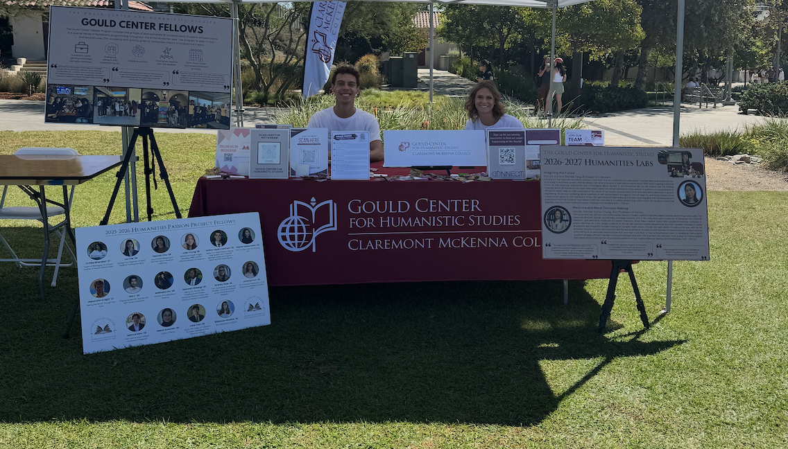
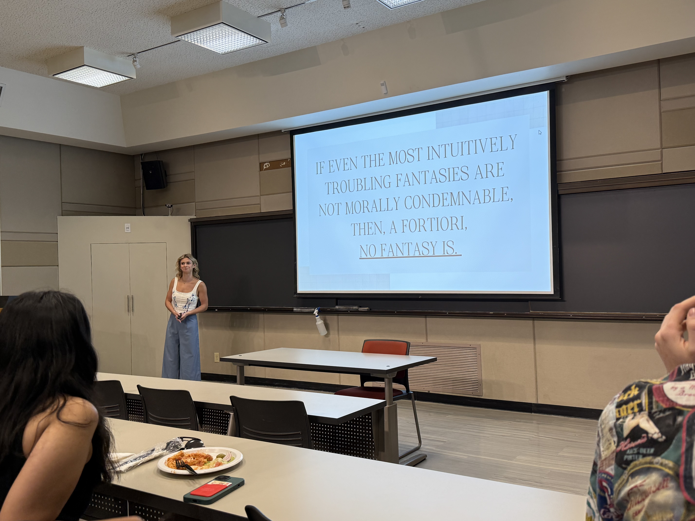
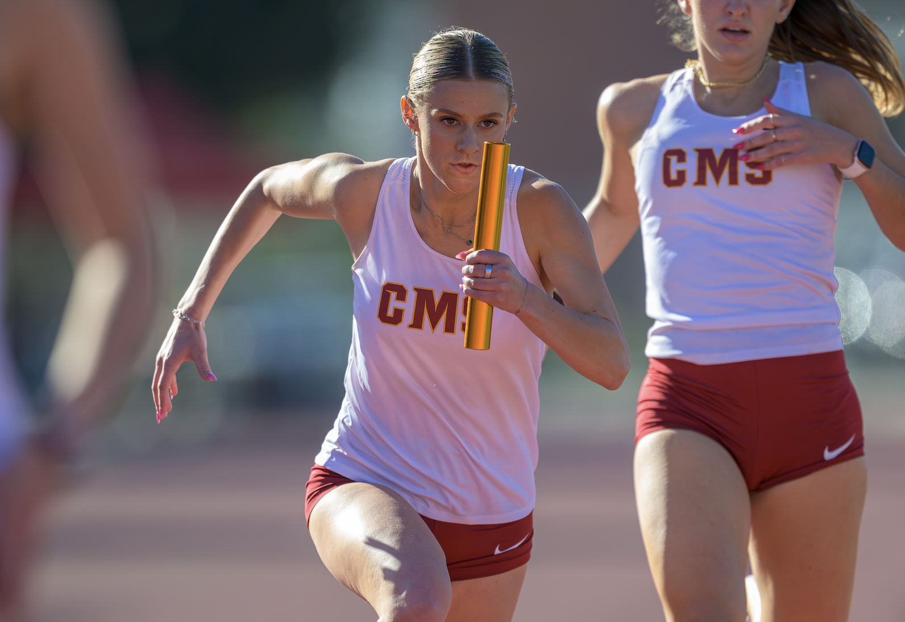

I'm a junior at Claremont McKenna College majoring in Philosophy and Public Affairs, with a Sequence in Legal Studies. I'm interested in pursuing a career in law or public policy. A few of the things that have shaped my path so far are below.
| I am the Student Manager–Special Projects Coordinator for the Gould Center, where I am currently involved in the curation of the Quantum Library at the Robert Day Sciences Center. The Quantum Library is a collection of books curated around the questions that books provoke and the profound impact they have on our academic and personal lives. As the Student Manager, I am also responsible for managing our social media account (Follow @QuantumLibraryCMC on Instagram!) and assisting with the planning and execution of events hosted by the Gould Center to celebrate the opening of the Quantum Library. |  |
|  |
As part of my Summer Research Program at Claremont McKenna College, I conducted research on the relationship between imagination, fantasy, and moral responsibility under the mentorship of Professor Amy Kind. My project examined whether individuals can be morally responsible for thoughts and desires they never act upon, focusing in particular on the autonomy of fantasy and the distinction between imagined and intentional action. I developed this research into a conference presentation, “Without Ever Touching His Skin: The Autonomy of Fantasy,” which I presented at the 2025 Eastern Michigan University Undergraduate Conference. |
| I am a member of the CMS Track & Field team, competing primarily in the 100m, 200m, and 400m sprints. I am a SCIAC finalist in the 4x100m relay and have personal bests of 12.70 in the 100m and 26.2 in the 200m. I compete at the NCAA Division III level as part of the Claremont-Mudd-Scripps Athenas. I also serve as a student-athlete representative on the Student-Athlete Advisory Committee (SAAC), where I represent CMS track and field athletes to the entire athletic department. |  |
|
|
|